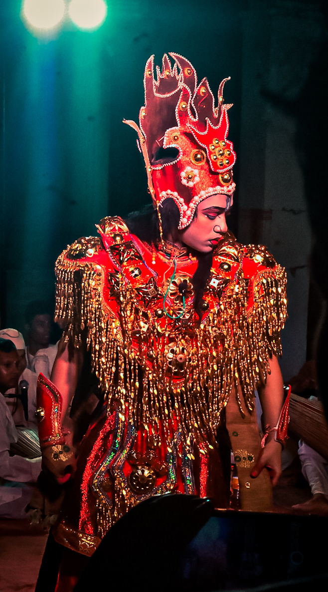
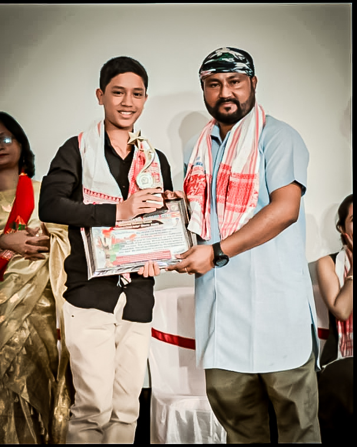
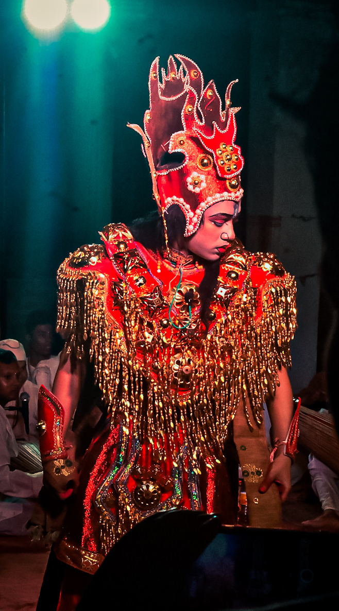
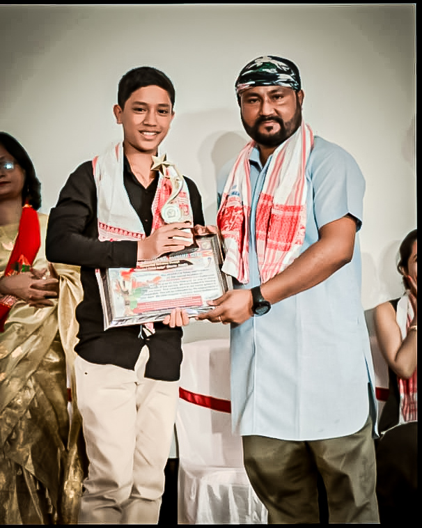
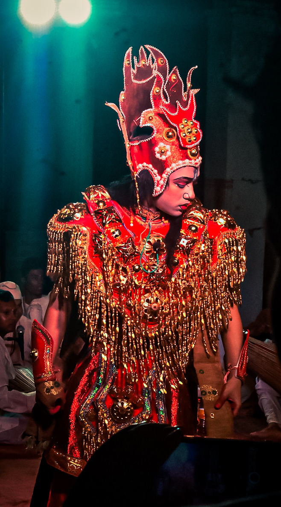
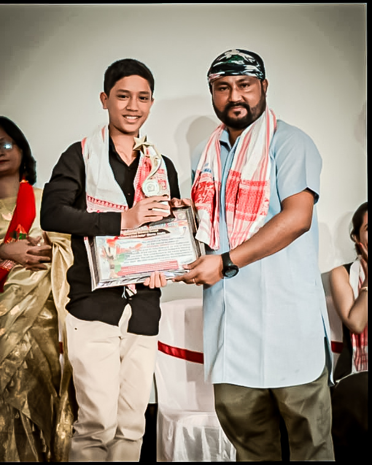

Gallery
Check out my latest pictures and performances!
[1].jpg) 



Mrinmoy Duarah is a talented actor from Assam, known for his exceptional performances in dramas and films. He has been recognized with the prestigious NEBCUS National Award for his remarkable acting skills as a child actor. Apart from his passion for acting, he is also an active member of UKA Drama Works, where he participates in various competitions and performances across Assam.
From an early age, he displayed a natural talent for acting, captivating audiences with his expressive performances. Over the years, he has worked in numerous theatrical productions and short films, refining his skills and earning accolades from industry professionals and audiences alike. His dedication to the craft has made him one of the most promising young actors in Assam.
Mrinmoy Duarah comes from a supportive family. His father, Mintu Duarah, was also an actor but stepped away from his career due to family responsibilities. His mother, Trishna Duarah, has always been a pillar of support in his journey. Together, they have encouraged him to pursue his dreams in acting.
The Duarah family has a strong cultural background, deeply involved in the artistic and literary traditions of Assam. Their home is a place of creative discussions, where music, drama, and literature play a significant role in daily life. This rich environment has greatly influenced Mrinmoy’s artistic journey.
He was honored by ATASU for his outstanding contribution to Assamese theatre and cinema. His performances have earned him great recognition, making him one of the most promising young actors in the region.
In addition to the NEBCUS National Award, he has also received various accolades at state-level competitions, where he has represented Assam with distinction. His talent has been acknowledged by several cultural organizations, and he continues to inspire young aspiring actors in the region.
Check out my latest pictures and performances!


For inquiries and collaborations, reach out via email or follow on social media:
Email: mrinmoyduarah2009@gmail.com
Instagram: @_mrinmoy__thespian_